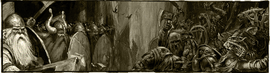
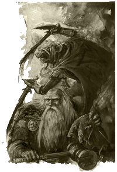
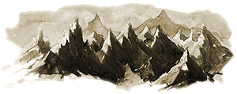
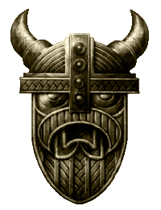

| |
Karak Azgal
Avagy a Sárkány Bérc Története.

Amikor
a világ még fiatal volt, törpe erõsségek
tarkították szerte a Világvége Hegység
teljes hosszát, a Kislevi határon fekvõ Karak
Vlagtól egészen a legendás Karak Zornnig
messze délen. A törpék mélyen a hegyek gyomrába
hatoltak, erõdöket vájva a puszta kõbe miközben
ékkövekre és ércekre vadásztak, mindközül is a
legértékesebbre a gromrilra. Az idõnkénti ork,
goblin és egyéb behatolók esélyt sem látva
hullottak el, a gazdaság pedig soha nem látott
virágzásnak indult.
Azokban
az idõkben a Sárkány Bérc Karak Izril avagy
az Ékkövek Városa néven volt ismert. Oly
mérhetetlenül sok volt a mélyben talált ékkövek
száma, hogy egyesek azt állították gazdagsága
vetekszik a nagyszerû törpe város Karak-a-Karaz
kincseivel. Ez volt a törpe nép tündöklésének az
ideje, ám mint mindennek ennek is vége szakadt
egyszer.
Az ork
és goblin hódítók kezétõl elesett
Karak-Nyolc-Bérc fent északon, csak az elsõ
lépés volt a szakadék felé. Kihasználva a
kiépített törpe karavánutakat, a zöld horda
gyûlölettõl vezérelve vetette rá magát a délen
fekvõ törpe erõsségekre. A mesék Karak Izril
gazdagságáról bejárták Óvilágot
keresztül-kasul, és az alant rejtezõ kincsek híre
idõvel még a zöldbõrûeket is elérte. A törpék,
önteltségüknek köszönhetõen, nem védték kellõ
erõvel az északra vezetõ karavánutakat, nem
gondolván, hogy Karak-Nyolc-Bérc valaha is
eleshet. Az orkok kihasználván a rést a törpék
védelmén, mérhetetlen vérszomjjal zúdultak rá a
felkészületlen Karak Izrilre.
Ugyanebben
az idõben, a ravasz skavenek is úgy látták, hogy
eljött a megfelelõ alkalom egy törpék elleni
hadmûveletre. Az elmúlt idõkben észrevétlenül
ástak alá a törpe bányákat, csupán a megfelelõ
pillanatra várva. Amikor hírét vették az ork és
goblin horda megérkeztének, elérkezettnek látták
az idõt, hogy megindítsák saját offenzívájukat a
törpe bányák ellen. Az immáron két tûz közé
szorított törpék hamar tudatára ébredtek
reménytelen helyzetüknek.
|
A
mélységekbe menekülvén, a törpék egy utolsó hõsies
kísérletet tettek, hogy megvédjék otthonukat. Az
orkok, goblinok és skavenek hullái halmokban
álltak a kárhozott törpék utolsóinak lábainál,
miközben az elkerülhetetlen ellen küzdöttek. Ám
amint az utolsó törpe is elesett, a behatolók
rögvest elkezdtek elrejtett kincsek után kutatni,
ám balszerencséjükre semmit nem találtak. Amíg a
harcosok az életüket adták az otthonukért,
Stormbeard rúnamester és mérnökei elrejtették a
kincset, mélyen a hegy gyomrában egy titkos
teremben. A Rejtõzködés Rúnáit kihasználva,
Stormbeard úgy rejtette el a bejáratot, hogy csak
egy törpe legyen képes felismerni. Megesküdvén,
hogy visszatér, a rúnamester sikeresen kivezette a
maradék túlélõket Karak Izril tárnáiból. A
Harag Nagykönyvébe pedig, az egykor ragyogó
törpe birodalom, már mint Karak Azgal avagy
Kincses Orom néven került be. |
 |
Sajnos
a törpék nem tértek vissza elég gyorsan, hogy az
okos rúnamester által elrejtett kincset
visszaszerezzék. Az orkokkal és goblinokkal
folytatott háború kimerítette a készleteiket, és
az egykoron tündöklõ törpe birodalom immáron a
végéhez közeledett. Nem sokkal az után, hogy az
utolsó túlélõk is elhagyták Karak Azgal
tárnáit, a sárkány Graul a Rettenetes új
otthonául kiáltotta ki a hegy gyomrában rejtezõ
csarnokokat. Fajtájának természetadta adottságát
kihasználva, Graug hamar megtalálta a rejtett
kincseskamrát, és ott rendezte be új fészkét.
Karak Azgal ezekben az idõkben vonult be úgy a
köztudatba, mint Sárkány Bérc.
Ezek
után, a sárkány hosszú idõn át nem talált
legyõzõre, holott megszámlálhatatlan kalandor
próbált szerencsét, a sárkány fejére (és a
kincsekre) igényt tartva. A törpék, az Ékszerészek
céhével a háttérben, szintén rendszeresen küldtek
expedíciókat a kincsek visszaszerzésére. Ám mind
kudarcot vallottak, egészed addig, amíg a törpe
hõs Skalf meg nem érkezett az õsi romok közé. A
törpe hamar megtalálta a rejtett kincseskamrát és
megütközött a sárkánnyal. A hosszú és véres csatát
követõen, Skalf megölte a sárkányt levágva annak
fejét, a kincseket és az erõdöt pedig magának
követelte.
Skalf
a sárkányölõ arra használta Graug kincseit, hogy
új erõdöt építsen az elõzõ romjain. Ugyan Karak
Izril ragyogását meg sem közelíti, de az új
Karak Azgal erõs és jól megépített erõdítmény,
amely büszkén áll a mindmáig fertõzõtt bányák
felett. A Skalf leszármazottai által uralt erõd, a
kincsek után kutató kalandorok közkedvelt
úticéljává vált az alatta elterülõ végtelen
útvesztõknek, és a ott rejlõ kincseknek
köszönhetõen. A törpék természetesen megpróbálnak
mindenre kiterjedõ kontrollt gyakorolni, lezárva
minden ellenõrizetlen lejutási pontot a romokhoz
és keményen megadóztatva mindazt, amit a
kalandozók a tárnákból felhoznak.

A
kincsek után kutatók áradata azonban hamarosan túl
soknak bizonyult, és egy csavargókkal és
szerencsevadászokkal zsúfol kalyiba-város nõtte ki
magát a törpék által emelt erõd lábainál. Idõvel
maguk a törpék is támogatták az új telep
létrejöttét remélve, hogy ezzel távol tarthatják
az óvilági söpredéket Skalf erõdjétõl. Ennek
eredményeképpen jött létre a hírhedt és
meglehetõsen veszélyes Halálkapu, a
kalyiba-város, amely a Skalf erõdjébe vezetõ utat
szegélyezi. Halálkapu az elmúlt idõkben rohamos
növekedésnek indult, és manapság már több gondot
jelent a törpéknek, mint áldást. Mindazonáltal, a
sebtében összetákolt kunyhókból álló telep az,
amit a Karak Azgalba látogatók elõször
megpillantanak.
Napjainkban
a törpék továbbra is régi dicsõségük
visszaszerzéséért küzdenek, ám mindhiába. Az õsi
fogadalom miszerint egy nap majd visszatér a város
régi pompája, mindmáig beteljesítésre vár. Számuk
túl alacsony, és még a sikeresen mûködõ Skalf
erõdje sem képes megadni a törpéknek, ami az alant
elterülõ csarnokok megtisztításához szükséges.
Akárcsak tyúk a tojásán, a Sárkány Bérc
törpéi várakozva ülnek atyáik csarnokain, miközben
kalandozók hordái merülnek alá a mélységbe és
hozzák fel az õsi kincseket - természetesen
keményen megfizetve azok árát.
|
Néhány
érdekesség:
-
A törpék minden olyan tárgyat elvesznek
a
kalandozóktól, ami a törpe örökség részét
képezi, a többit pedig megadóztatják.
-
A rendre a Törvényhozók Rendje vigyáz,
amely kivétel nélkül Hosszúszakállú veteránokat
tartalmaz.
-
Skalf erõdje mintegy 200 törpe harcosnak
ad otthon, háborúban azonban további 500-al
növelhetõ a számuk.
-
A mélyben elterülõ romokban nemcsak
skavenek, orkok és goblinok, de élõholtak és a
káosz szolgái is megtalálhatók.
|
 |
| |
|
-
Karak Azgal csak
keletrõl és nyugatról közelíthetõ meg, ott azonban
két, tornyokkal megerõsített fal védi, egy
mérföldnyire magától a várostól.
-
A keleti, Karak Azul felé vezetõ utat, a
törpék Sárkányfej Hágónak nevezték, amely manapság
egy elsõrangú és keményen ellenõrzött útvonal, míg
a nyugati, a Rosszföldek felé vezetõ út, a
Sárkányfarok Hágó névre hallgat.
|
fordította:
Rince
A cikk a WFRP, Karak
Azgal kiegészítõjének a
bevezetõje alapján készült
|
|